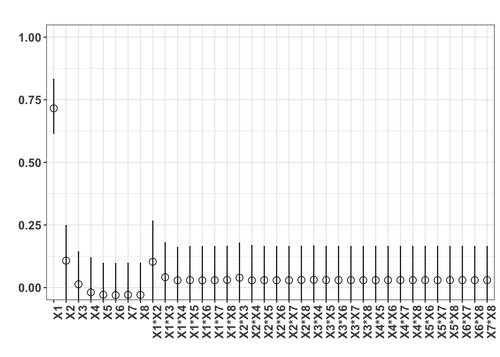
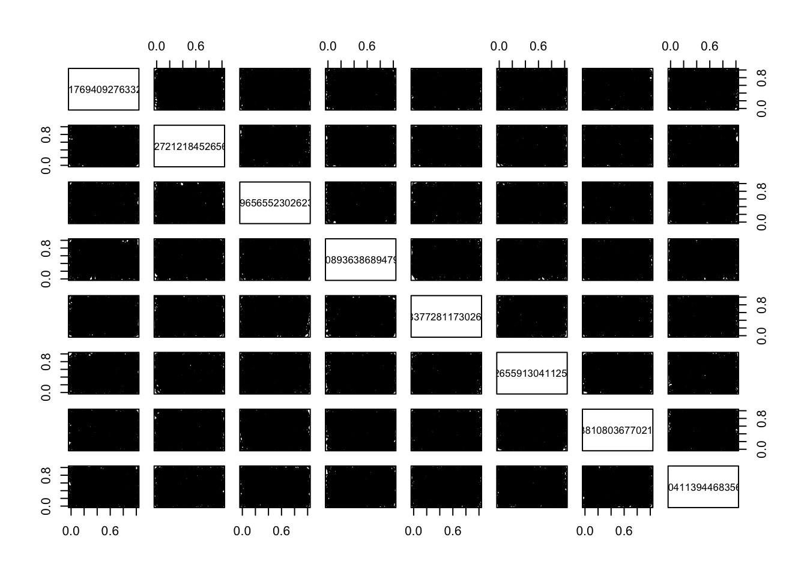

Code
n <- 1000
X1 <- data.frame(matrix(runif(8 * n), nrow = n))
X2 <- data.frame(matrix(runif(8 * n), nrow = n))
# sensitivity analysis
x <- sobol(model = sobol.fun, X1 = X1, X2 = X2, order = 2, nboot = 100)
print(x)
Call:
sobol(model = sobol.fun, X1 = X1, X2 = X2, order = 2, nboot = 100)
Model runs: 37000
Sobol indices
original bias std. error min. c.i. max. c.i.
X1 0.71828456 0.002445438 0.05186076 0.61657267 0.83118519
X2 0.11566517 0.008152420 0.06524513 -0.04495559 0.24780626
X3 0.02119309 0.007832096 0.06405158 -0.11089865 0.14241266
X4 -0.01045341 0.008627902 0.06551847 -0.14857049 0.11906131
X5 -0.02044485 0.008093132 0.06421207 -0.16307713 0.09657454
X6 -0.02169464 0.008265737 0.06414454 -0.16499003 0.09577416
X7 -0.02070819 0.008243268 0.06420241 -0.16413294 0.09661017
X8 -0.02119081 0.007987289 0.06423328 -0.16334437 0.09668928
X1*X2 0.09555373 -0.007639882 0.07826432 -0.05118885 0.26557789
X1*X3 0.03309802 -0.008589700 0.06637684 -0.08804008 0.17883732
X1*X4 0.01956721 -0.009451668 0.06288286 -0.09443062 0.15993281
X1*X5 0.02163437 -0.008280230 0.06413888 -0.09634617 0.16381146
X1*X6 0.02087152 -0.008160821 0.06403248 -0.09647914 0.16346848
X1*X7 0.02141592 -0.008132554 0.06404980 -0.09556315 0.16379275
X1*X8 0.02234298 -0.008221968 0.06401672 -0.09424576 0.16467397
X2*X3 0.03042921 -0.008913108 0.06571678 -0.09043714 0.17765966
X2*X4 0.02043462 -0.008445121 0.06477597 -0.09754521 0.16774232
X2*X5 0.02170404 -0.008148076 0.06407436 -0.09564903 0.16382602
X2*X6 0.02100104 -0.008176939 0.06412990 -0.09665733 0.16347599
X2*X7 0.02134876 -0.008124752 0.06409806 -0.09598199 0.16362810
X2*X8 0.02221105 -0.008225145 0.06410079 -0.09509822 0.16434613
X3*X4 0.02272969 -0.008321954 0.06443601 -0.09500249 0.16658228
X3*X5 0.02182676 -0.008165834 0.06412735 -0.09575746 0.16409740
X3*X6 0.02184411 -0.008152459 0.06409339 -0.09552783 0.16400958
X3*X7 0.02173355 -0.008176563 0.06412144 -0.09544991 0.16402746
X3*X8 0.02152713 -0.008169608 0.06411604 -0.09575735 0.16402055
X4*X5 0.02166003 -0.008154140 0.06410582 -0.09569189 0.16403534
X4*X6 0.02168870 -0.008173371 0.06412289 -0.09573416 0.16414538
X4*X7 0.02184814 -0.008166242 0.06409887 -0.09558916 0.16414173
X4*X8 0.02187975 -0.008164186 0.06410859 -0.09541363 0.16420010
X5*X6 0.02170013 -0.008162384 0.06411030 -0.09565447 0.16405777
X5*X7 0.02170264 -0.008162974 0.06410948 -0.09565215 0.16405030
X5*X8 0.02170714 -0.008163759 0.06411016 -0.09565146 0.16406589
X6*X7 0.02170093 -0.008162875 0.06411003 -0.09565642 0.16405360
X6*X8 0.02169374 -0.008163356 0.06411094 -0.09566522 0.16405104
X7*X8 0.02170280 -0.008163541 0.06410956 -0.09565216 0.16405102Code
#plot(x)
library(ggplot2)
ggplot(x)
Code
plot(X1, sobol.fun(X1))